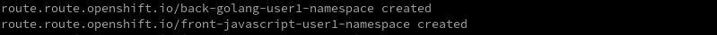

Service Mesh Communication Flows
Create a Custom Certificate in Openshift
It is time to create a new secret in Openshift to save the respective certificate files. Please, create this new secret executing the following command:
oc create -n istio-system secret tls <user_namespace>-credential --key=./03-jump-app-flows/front.jumpapp.com.key --cert=./03-jump-app-flows/front.jumpapp.com.crt
Figure 1. Secret Created
Modify Golang Route in istio-system Namespace
Once "regular" routes are deleted, it is required to create the new ones.
Please, create new routes in istio-system namespace through the respective Openshift template executing the following command:
oc process -f 03-jump-app-flows/04-jump-app-routes.yaml --param-file=params.env --ignore-unknown-parameters | oc create -f - -n istio-system

Figure 2. Mesh Routes Created